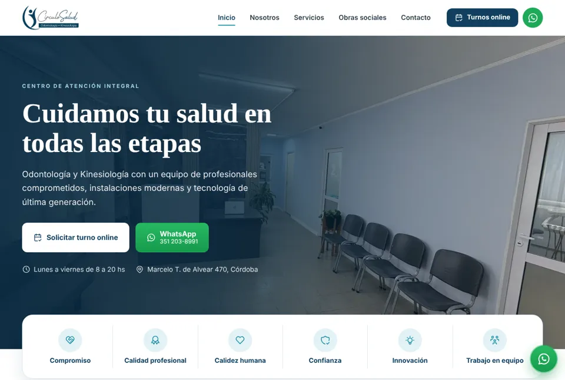
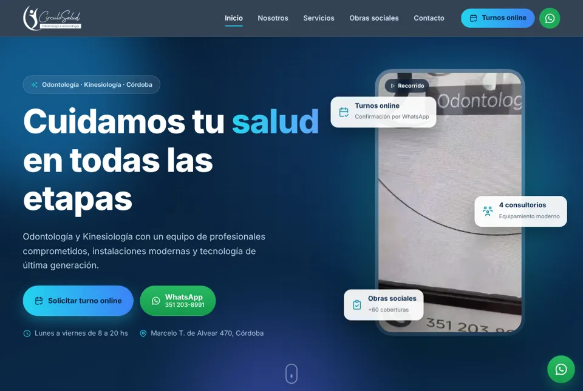
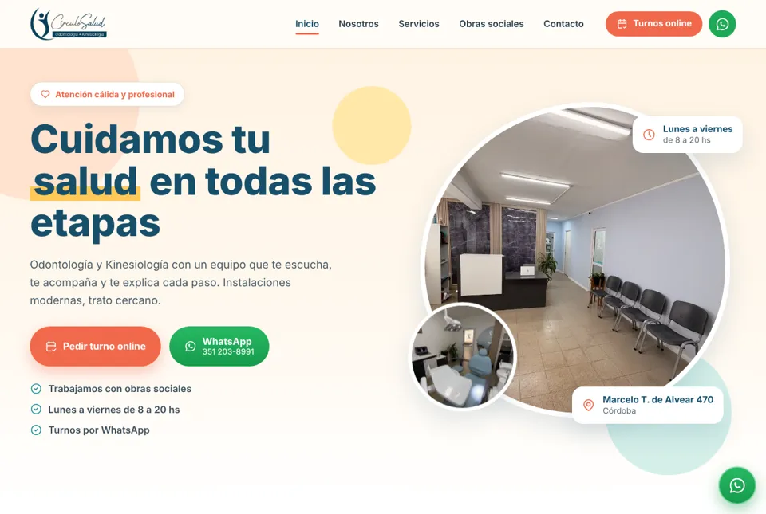

Modelo 1

Elegante e institucional
Sobrio y confiable, con la paleta azul del logo.
- Foto de la recepción en el inicio
- Tipografía clásica con serif
- Animaciones suaves al desplazarse
Tres propuestas de diseño para el sitio de Círculo Salud, con el mismo contenido. Entrá a cada una, recorrela completa (también en el celular) y decinos cuál preferís.

Sobrio y confiable, con la paleta azul del logo.

Oscuro y dinámico, con video en el inicio.

Claro, amable y colorido, pensado para generar confianza.